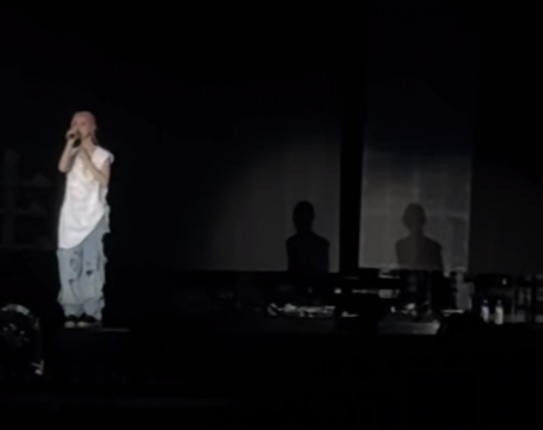

她在开始也说了，筹备演唱会的时候已经跟大同商量了选曲，早就定了要唱love song和四人游，大同还专门为她只做了四人游的合声，所以肯定是计划邀请大同当嘉宾的，二十三也是后来决定加的，我觉得没必要这么阴谋论，他们工作都很忙，事业心这么重，不可能天天黏在一起，但是音乐永远是他们的粘合剂，这样不好吗
其实我很不喜欢有人去世的时候 他的朋友翻唱怀念他被说成消费 他们是很好的朋友 何必给他们框一个连怀念都被禁止的结局 这样的话路人更没有资格评判
他那天也有到场的[流泪]
[泣不成声]
前两首hold住了，第三首，大同的声音一出来就哭了[流泪]
[赞]听得出你的拼音有进步哦
别哭，他在呢。 
岁月眨眼就过了
她一直看着天上唱啊[流泪][流泪][流泪]
抖音的氛围还是比微博好太多[流泪]微博全在骂[流泪]
现在在任何一家店里面听到大同都会马上出去 就怕下一秒流泪[快哭了][快哭了][快哭了]
简直是哭到不行[流泪][流泪] 太有感染力了 能感觉得到大家都很痛 薛凯琪更痛[流泪]
如果没有爱过，怎么会有这首《四人游》呢[流泪][流泪][流泪]
声音一出来我就哭了
20年的感情，fi最有资格唱kha的歌，一直唱才会让大同不会被遗忘[流泪]
其实大同在后台合唱呢[流泪]
影子好像大同[流泪]
拿了100块钱的表哥表姐们
小孩走到表哥耳边：“世子之争素来如此”
孩子爹：[憨笑][憨笑][赞]
一旁的父亲：
表哥表姐：你怎么这么自私
不动产动了一下
10块钱撬动了房产证
这母子俩一唱一和[憨笑]最终房子归他们家了
小孩儿的真心话，被大人们误解[憨笑]
第二天太爷的桌上多了表哥拿一百元买的六味地黄丸，并祝福太爷长命百岁[看]
不争才是争
100块不一定是你的，但10块一定是你的[捂脸]
妈妈为什么这么急？因为急着收零花钱[憨笑][憨笑][憨笑]
主线任务-拿到家产继承权（已完成）
这么大的小孩懂什么心机，他说的都是心里话
没有妈妈这句话小男孩怎么顺理成章的说出这句话，所以母子两人没有一个人是傻的[憨笑]
评论区还是太天真了 一百回家就被没收了 十块钱可以自己花
一堆100里为什么会有一张10块呀，好难猜呀
人家健全人姑娘爸妈，也不愿意姑娘和一个聋哑人男人结婚吧[愉快]
自己儿子不健全让儿子谈健全的，这和家里穷，让必须找富婆有什么区别[憨笑]
龙叔“我歌又不够，又忘歌词” JJ“我也一样” 龙叔“你也一样？” JJ“我歌够，但是我忘歌词”
众所周知成龙半个是中国人，半个是现在所在地的人
武汉是成龙大哥的半个家乡
成龙也是好起来了，都能跟JJ同台了[发呆]
我怎么了～居然觉得科学[捂脸]
《我太性感》《生了个感性的小孩》
所以送电瓶说小知虽然长得像他，但是除了外貌其他都像正方形[流泪][流泪]
可是感性的人会过的很累[流泪]
看的是《你看起来很好吃》吗
感性的正方形生了一个感性的小知来陪伴她守护她[泣不成声][泣不成声][泣不成声][泣不成声]
谁懂 刚把自己哄好 又看到小知哭 一下子[流泪][流泪][流泪]
卡在这里了，好萌好温馨[流泪]
保定十三太保
老刘，你是全网唯一一个敢放杨绍杰一金一的选手[赞]
看杨绍杰打比赛一本正经，板这个脸，底下是个逗比啊[捂脸][捂脸][捂脸]
杨绍杰也是好起来了，能和我们老刘追分了[看]
你唱滴答滴的时候才16岁啊[石化]
看来最近不好混啊，上古真神们都开始露脸了[愉快][愉快]
你才20岁啊[宕机]
你才二十…可是空叹兮我听了四年多了[憨笑][赞][流泪][流泪]
第一首我就招了[憨笑]
听之前：好大的口气 听之后：好大的名气
我有多爱 家里唯一一幅上墙的挂画 就是空叹兮的歌词[微笑]
@阿困Zz… @说好一起养小猫 不是今年是大家保密协议到期的一年吗[憨笑]
前面的都听过，一直到花火我睁大了眼睛，和谷江山合唱的姐姐原来是你！！！！听了超多遍
我姐，你知道世界上哪里最冷吗？是的你没猜错，是傲七爷的微博超话[思考]
枕！头！下！的！童！话！书！
这个喷不了，这个真在柏林[捂脸]
我有一个好主意
不是就我笑点最低是吧，你们都不笑的吗[发呆]
你给人家做胃镜呢？
小猫视角
很像一位故人
啊～丫头～～～
对靖王：不用顾念我 对林殊：交给静姨[看]
静妃：“哈哈哈，我终于不用装傻了，老娘有的是智商和手段！”
麒麟娘娘早晨知道儿子要夺嫡晚上自己就升职了[呆无辜]
那如果穿彩虹色，岂不是...[看]
接接接 我跪着接
2025是真的没歌了
新地球杀回来了
上次火还是在日本排核污水。[黑脸]
这首歌我小学五年级还是六年级听的来着，不知道为啥现在才火[捂脸]
是什么执念一个月发3遍

我不得不拿出这张图了

这双眼睛足够战胜一切[赞]
不翻以前还是个大女主专用曲，翻译后这个歌词。。。。。。
说歌词露骨上不来台的，了解背景再说好吗[捂脸]歌名叫官妓，讽刺肯尼迪和玛丽莲梦露的
当一个国防军事视频配上一个这音乐，老外看到：[思考]
评论区质疑歌词的纯住感觉播放列表第一位是跳楼机[泣不成声]
这么有压迫感的bgm翻译过来竟然只是这种歌词吗[黑脸]
谁给她画的口红[微笑]
歌词还是太超前了[666][666][笑哭][捂脸]
[赞]这才是官方媒体应该干的事。正确引导大家，输了不可怕，气馁才可怕。加油大头，平时加量加练，下个赛场见[鼓掌][鼓掌]
谁骂谁是间谍！[赞][赞][赞][赞]
亲哥哥在亲弟弟的坟山炸死亲弟弟的三个女儿吗[发呆]
就应该维持原判，立即判死刑
再怎么结怨也不能在亲兄弟坟前炸死他的亲生女儿[泪奔]这也太毒了
支持判死刑 ，三条人命 ，判三回死刑都不为过 ，必须要判死刑 ，真可气人
他有什么资格不服上诉？[捂脸][捂脸][捂脸]
练了两个月终于练出个人样了[暗中观察][暗中观察]
写的好！赐经，赐最痛的经。
不写往往有时也是最好的表达[赞]
为什么我一米九还找不着对象[流泪]
你女朋友最近有点上火，舌尖起了水泡，注意喝水，照顾好她
你们听曲，我给你们下刀削面，有什么忌口的，提前说一下[呲牙]
先收藏起来等挑个黄道吉日再来跳[捂脸]
你们都是什么派，我是收藏派
周比利也就是和于海才能使出全力[捂脸][捂脸][捂脸]
原著，老年的傻柱被秦淮茹一家抛弃，傻柱最后被冻死在桥底下，最后许大茂给傻柱收的尸，安葬的后事。
Read more: